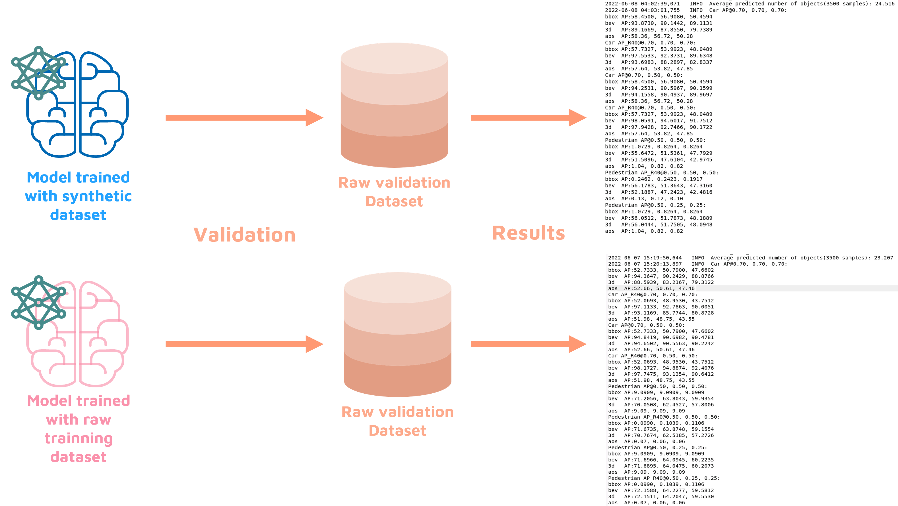

Data-Centric Machine Learning for Autonomous Driving
Machine Learning is the automatic learning process of machines. The process is to train a model with data and get a trained model.

Strategy
For many years, researchers have been using a model-centric strategy when approaching machine learning, this is, they have been focusing on building models (algorithms).The better the model, the better the result. However, now, this models already exist, they are accurate and they are open-source.
So, How to improve those models' accuracy?
Data-Centric!
With this strategy, we choose an already existing, good, model and then focus on enhancing the quality of the dataset to be used for training the model.
Trying to improve data quality by using synthetic data
Our premise is to prove that tha synthetic dataset is better than the original
Real environment
Our simulation environment
Used datasets
Testing the quality of the synthetic dataset by comparison of trained models

Obtaining results
Understanding results

Categories of car validation
Easy, Medium and Hard, based on values of Occlusion(percentage of car that is hidden by another object), Truncation(percentage of car that is hidden by point cloud limits), Height of bounding box(how far the car is)

Validation results
In comparison with the raw dataset.
Conclusion
With the previous results, we can conclude that our synthetic datasets (v1 and v2) are better than the raw dataset, showing that this process is promising for improving object detection models' quality for autonomous driving.
Tools
Simulation Environment: GTA V Tool to capture point clouds: PreSIL Sensor: LiDAR Data: Point Clouds Model: Point Pillars Metrics: IoU, Average Precision
(Pointcloud taken from a LIDAR)
Team
 Tiago Coelho
Student
Tiago Coelho
Student
 Frederico Vieira
Student
Frederico Vieira
Student